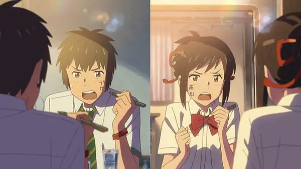
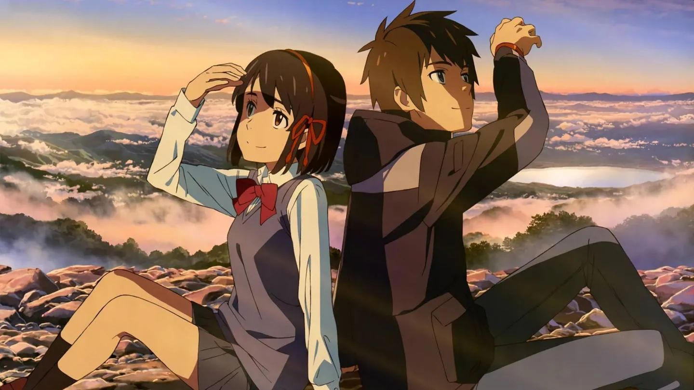

Mitsuha Miyamizu is a high school student in the rural town of Itomori, Japan. Bored of the town, she wished to be a Tokyo boy in her life. Soon, she begins to intermittently switch bodies with Taki Tachibana, a boy from Tokyo. On certain days, Taki and Mitsuha wake up in each other's bodies and must live the entire day as the other, reverting when they go to sleep at night. The two set up ground rules for sharing their bodies, communicating via messages on paper, their phones, and their skin. Mitsuha (in Taki's body) sets Taki up on a date with his coworker, Miki Okudera, while Taki (in Mitsuha's body) helps Mitsuha become more popular at school. While in Mitsuha's body, Taki accompanies Mitsuha's grandmother Hitoha and younger sister Yotsuha to the Shinto shrine on a mountain near Itomori, leaving an offering of kuchikamizake made with Mitsuha's spit. Hitoha explains that god is the ruler over both time and the connections between humans. Mitsuha tells Taki that the comet Tiamat is expected to pass nearest to Earth on the day of the autumn festival. The next day, Taki goes on the date with Miki in his own body; Miki enjoys the date but says she can tell Taki he is preoccupied with someone else.


Realizing he is falling for Mitsuha, Taki attempts to call her on the phone but cannot reach her. The body-switching stops as inexplicably as it started. Taki, Miki, and their friend Tsukasa travel to Hida to search for Mitsuha. Taki does not know the name of Mitsuha's village, so he sketches the landscape from memory; a restaurant owner in Takayama recognizes the town as Itomori and offers to take Taki and his friends. When they arrive, they find the town almost entirely decimated by fragments that fell from Tiamat. Since the comet passed three years earlier, Taki realizes that he and Mitsuha were separated by three years, her living in 2013 and he in 2016. He finds Mitsuha's name among the 500 people killed by the comet's impact. Taki begins to lose his memories of Mitsuha, seeing her messages disappear from his phone. In a panic, he races to the shrine and drinks the kuchikamizake. He has a vision and recalls that Mitsuha once came to Tokyo to find him; though he did not recognize her, she gave him a ribbon he has worn ever since. Taki awakens in Mitsuha's body on the morning of the festival, where Hitoha speaks directly to him, explaining that the body-switching phenomenon has always been in their family. Realizing he has a chance to save Mitsuha and the entire town, Taki convinces Mitsuha's friends to help him broadcast an emergency signal, evacuating Itomori before the meteor fragments strike. He then heads to the shrine, where Mitsuha has just woken up in Taki's body. As twilight falls;[note 1] their timelines cross, allowing them to meet in person for the first time. Taki returns Mitsuha's ribbon, and they attempt to write their names on each other's palms, but twilight ends before Mitsuha can write hers.
She returns to the village to see that the evacuation plan failed but convinces her father, the mayor, to order an evacuation. Beginning to forget Taki, she discovers that he wrote "I love you" on her hand instead of his name. Taki awakens in his own time with no memory. Five years later, Taki is a university graduate struggling to find a job. He is obsessed with the impact of Tiamat, when the villagers of Itomori were miraculously saved by a fortuitous evacuation drill, but cannot remember why. One day, he glimpses Mitsuha, who has moved to Tokyo; they race to find each other. As they pass the stairs of a shrine, Taki calls out to Mitsuha, and the two simultaneously ask each other for their name.
